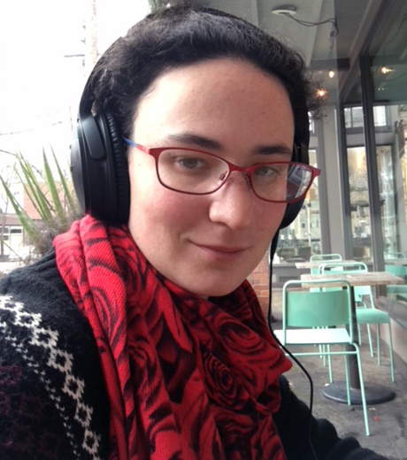

|  | Molly Carton
PhD Candidate Department of Mechanical Engineering |
|||||||||||
|
|
|
| ASME | Yurtoglu, M., Carton, M, and Storti, D. "Treat All Integrals as Volume Integrals: A Unified, Parallel, Grid-Based Method for Evaluation of Volume, Surface, and Path Integrals on Implicitly Defined Domains." ASME J. Comput. Inf. Sci. Eng 18.2 (2018): 021013. | |||
|
Carton, M., and Ganter, M. Fast and Simple Printing of Graded Auxetic Structures | slides | ||
| Senior thesis, April 2014 | Molly Carton. Curvature Relocation of MreB Using AFM Control of Cell Shape. | Princeton archive |
Department of Mechanical Engineering
University of Washington
3900 E Stevens Way NE
Seattle, WA 98195